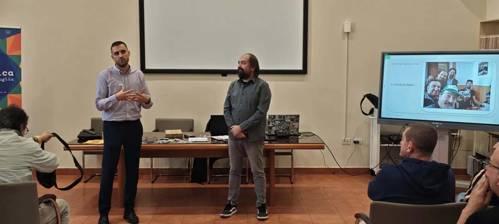

Sala piena, qualcuno in piedi, uptime del 100% e nessun kernel panic.
Per noi è una release stabile.
Le sedie sono finite prima delle persone. Chi è arrivato dopo ha seguito in piedi.

Sullo schermo c'era una slide diversa dalle altre: "in ricordo di Gianni". Gianni Albore era un amico del LUG, con cui abbiamo condiviso tanti progetti. Non c'è più. Questo Linux Day è stato anche un modo per ricordarlo.
Hotfix in produzione
In scaletta c'era anche un talk di Dario Palanga. Poi Dario ha avuto un imprevisto e non ha potuto esserci.
Nel nostro mestiere si chiama incidente. Vincenzo Quaranta l'ha trattato da hotfix: ha coperto il posto in scaletta e ha tenuto due talk, qualità dell'aria e reti comunitarie. Per lui lo stack overflow è solo un warning.
Vincè, senza di te non sarebbe stata la stessa giornata. Dario, ci sei mancato.
La fine delle scuse
Francesco Moro ci ha portato dentro l'universo Wikimedia e ci ha spiegato come contribuire. Ora nessuno ha più la scusa del "tanto ci pensa qualcun altro".
Qui le pull request sono benvenute.
Un punta e clicca senza impazzire
Tommaso De Siato, con Godot e Popochiu, ci ha mostrato come costruire un'avventura grafica da zero. Il debug dei giochi, per fortuna, è rimasto fuori scaletta.
Tommaso ha dedicato il talk ai suoi genitori, mancati entrambi quest'anno. Ha detto:
Godeteveli finché ce li avete, perché il vuoto che ti lascia dentro è impossibile da colmare.
Foto belle, licenza zero
Pasquale Leo ha insegnato a post-produrre le foto con software open. Costo della licenza: zero. Il resto, come sempre, è questione di pratica.
Un gadget riscrivibile
Federico Franzoso ha realizzato nel nostro Fab Lab, per l'occasione, dei gadget con tag NFC, distribuiti a chi è venuto. Il tag è aperto e riscrivibile, in pieno stile open source: il gadget è tuo e il contenuto lo decidi tu.
Il deploy
Alessandro Argentieri ha curato l'organizzazione nei dettagli, coffee break compreso. È il motivo per cui il deploy è andato bene al primo colpo, cosa rara anche nel software.
Il resto della squadra, in ordine sparso. Tutti in Gioco e Jonix LUG hanno co-organizzato con noi. Il Laboratorio Analisi Piro & Spina ci ha sostenuto come sponsor. Il team social di Fare Zero, Angelo Genovese, Ilaria Lombardi e Pierpaolo De Padova, ha raccontato la giornata mentre succedeva. Il team di Fare Zero Makers Fab Lab ha montato tutto. La biblioteca ci ospita da anni, e l'Italian Linux Society ci ha mandato i gadget. Grazie a tutti.
Le slide
Le slide dei vari talk le stiamo caricando su GitHub, nel repository talks-and-demos, nella cartella linux_day_2026. Chi se le è perse in sala può recuperarle lì.
Alla prossima release
Il changelog dell'anno prossimo è già aperto e accetta contributi: se vuoi portare un talk o dare una mano, scrivici.
Stesso posto, stessa community. Coffee break subito dopo Vincenzo: scelta di progetto, non coincidenza.
William Donzelli
Presidente Fare Zero Makers Fab Lab, LUG di Francavilla Fontana
Tutto sul Linux Day 2026